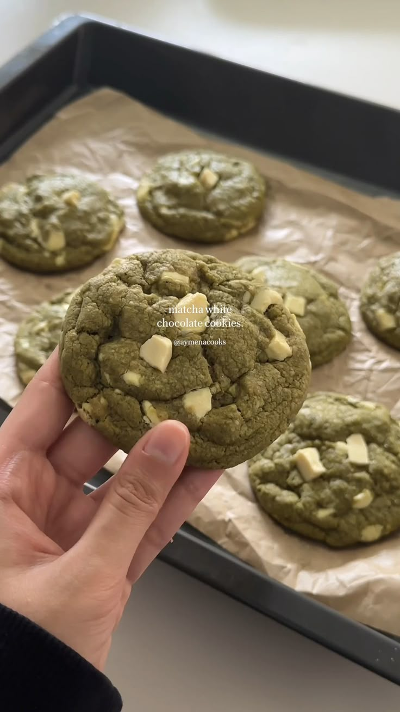

Home
Matcha Cookies

Matcha Cookies are soft and chewy sugar cookies with a beautiful bright matcha green tea flavor. These light, fluffy cookies are a delightful sweet that are made with real matcha powder and take 10 minutes to bake. Freeze a batch for future enjoyment!
Ingredients
- 153g all-purpose flour
- 10g matcha powder
- 1/4 teaspoon baking soda
- 1/4 teaspoon salt
- 100g butter
- 50g raw or light brown sugar
- 1 large egg
- 120g white chocolate, chopped
Instructions
- Preheat your oven to 175°C (350°F). Line a baking sheet with parchment paper to prevent sticking and ensure even baking.
- Melt the butter in a small saucepan over medium heat. Stir occasionally as it foams and begins to turn golden brown. You’ll notice a nutty aroma and browned milk solids forming at the bottom. Remove from heat and let the butter cool.
- In a medium-sized bowl, whisk together the flour, matcha powder, baking soda and salt. This step ensures the dry ingredients are evenly distributed
- In a separate large bowl, combine the cooled browned butter with the white sugar and raw sugar. Whisk until the mixture is smooth. Add the egg and continue whisking until the mixture lightens in color and thickens slightly.
- Gradually add the dry ingredients to the wet mixture. Stir until just combined—be careful not to overmix. Gently fold in the white chocolate chunks, saving about ¼ of the chunks for topping.
- Using a cookie scoop or spoon, portion the dough into balls and place them on the prepared baking sheet. Space them apart to allow for spreading. Press the reserved white chocolate chunks onto the tops of the dough balls for a professional touch.
- Bake the cookies in the preheated oven for 10–13 minutes. The edges should turn golden brown, while the centers remain soft. Remove the cookies from the oven and allow them to cool on the baking sheet for 5 minutes before transferring them to a wire rack to cool completely.